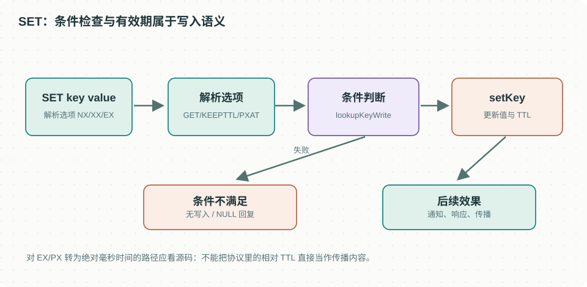
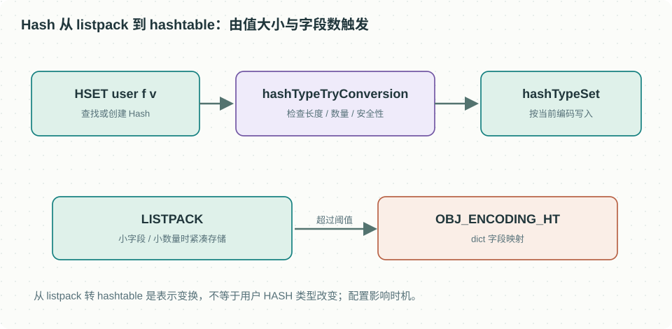

Chapter 09 · Redis 7.2.4 Source Anatomy
String 与 Hash：条件写入、TTL 和紧凑编码转换
沿 setGenericCommand / incrDecrCommand / hashTypeSet 跟踪条件更新、整数溢出、Hash 编码变化与版本分界。
同样写入数据，SET 与 HSET 哪里不同？
假设要保存 SET token:42 active EX 60 和 HSET user:42 city Beijing。两者最终都会进入数据库键空间，但 String 值是一个 String 对象，Hash 值则是一个可包含多个字段的容器对象。Hash 的内部字段没有天然独立 keyspace TTL（Redis 7.2.4），因此不能把 Redis 的键过期字典直接套到每个 Hash field 上。
第一个值得追踪的问题是：命令参数何时完成解析、什么时候查询旧键、由谁判断能否覆盖，以及何时设置/清除 TTL？第二个问题是：当 Hash 字段变多或字符串变长时，什么时候从紧凑 listpack 转为字典？理解这两条路径，才能准确解释 SET NX、SET GET、HSET 的返回值和复杂度。
SET 源码：先判断是否允许写入，再处理 TTL
在 t_string.c 中，setCommand() 解析 NX、XX、GET、EX、PX、EXAT、PXAT、KEEPTTL 等标志，再调用 setGenericCommand()。后者依条件读取旧值以提供 GET 回复，检查键是否存在和 NX/XX 限制；条件失败时不执行写入，条件通过才调用 setKey() 并更新有效期。

| 输入 | 初始状态 | 期望动作/返回 |
|---|---|---|
SET k a NX | 键不存在 | 写入 a，返回 OK |
SET k b NX | 键已存在 | 不覆盖，返回 Null |
SET k b XX | 键已存在 | 覆盖为 b，返回 OK |
SET k c GET | 键旧值为 b | 写入 c，返回旧值 b |
SET k d | 键有 TTL | 默认清除 TTL（除非显式 KEEPTTL 等） |
调用顺序的关键不变量是：无论 NX/XX 是否生效，服务器都不应破坏已有键的正确类型和状态；命令成功后 server.dirty、键空间通知等需配合执行。setGenericCommand() 在某些带过期时间的路径中将传播命令重写为带绝对毫秒过期时间的形式（例如 PXAT），使复制和 AOF 不依赖传播到达的延迟。
INCR 原子增减的边界：整数解析与溢出
INCR 最终进入 incrDecrCommand()。命令查找已有 String 值并尝试转为有符号整数，按指定增量做带溢出检查的运算，然后创建新对象并写入。单次命令在 Redis 服务器执行路径中具有命令级原子性，但这不等于“先 GET 再 SET”两条独立客户端命令也自动原子。
./src/redis-cli -p 6390 SET counter 41
./src/redis-cli -p 6390 INCR counter
./src/redis-cli -p 6390 GET counter
./src/redis-cli -p 6390 OBJECT ENCODING counter
# 最大值之后继续 INCR：应返回 integer overflow 错误
./src/redis-cli -p 6390 SET counter 9223372036854775807
./src/redis-cli -p 6390 INCR counter预期前两次 GET/INCR 的值变为 42；超出有符号 64 位界限的增量会报错，而非在 Redis 数值空间里“自动绕回”。尽管值表面看是文本，内部可以采用 INT 对象编码；客户端可观察的仍是 String 数据类型。
HSET 与 HGET：从字段/值对走到两种编码
Redis 7.2.4 的新 Hash 默认以 OBJ_ENCODING_LISTPACK 创建，紧凑存储 field/value 对。hsetCommand() 解析偶数个 field/value 参数，调用 hashTypeTryConversion() 预先检查当前 listpack 能否容纳这些成员，再逐对执行 hashTypeSet()。如果新字段或新值超过 hash-max-listpack-value、字段数量超过阈值，或 listpack 的空间安全检查不通过，编码可能变成 OBJ_ENCODING_HT。

查找操作 HGET 先通过数据库键空间定位 Hash 对象，再按对象编码选择 listpack 查找还是字典查找。故“小 Hash 也用哈希表 O(1) 查字段”是误导：listpack 中通常要逐对扫描，成本随字段数上升，但紧凑内存有较好的局部性。转换到 HT 后，平均字典查找才更接近哈希表常见复杂度。
/* Redis 7.2.4 的 HSET 路径，教学式缩写 */
hsetCommand(client *c):
verify field/value pairs
o = hashTypeLookupWriteOrCreate(...)
hashTypeTryConversion(o, c->argv, 2, c->argc-1)
for each (field,value):
created += !hashTypeSet(o, field, value, HASH_SET_COPY)
addReplyLongLong(c, created)HSET 返回的是新添加字段数量，不是处理的字段/值对总数。覆盖已有字段时，这个字段不计入新增数。对大量字段执行 HGETALL 会读取并返回所有字段，存在 O(n) 遍历和大响应问题，不能把它当作大 Hash 的“廉价查看所有字段”操作。
固定条件下复现实验：字段数量驱动编码转换
为了让实验更容易复现，先将测试实例的 hash-max-listpack-entries 调成 2，确保第三个不同字段超过数量阈值。CONFIG SET 只应在专用测试实例中操作；这个配置会影响后续新写入的键。
./src/redis-cli -p 6390 CONFIG SET hash-max-listpack-entries 2
./src/redis-cli -p 6390 DEL test:hash
./src/redis-cli -p 6390 HSET test:hash a 1 b 2
./src/redis-cli -p 6390 OBJECT ENCODING test:hash
./src/redis-cli -p 6390 HSET test:hash a 9
./src/redis-cli -p 6390 HSET test:hash c 3
./src/redis-cli -p 6390 OBJECT ENCODING test:hash
./src/redis-cli -p 6390 HGETALL test:hash
./src/redis-cli -p 6390 CONFIG SET hash-max-listpack-entries 512在默认其它条件下，前两字段通常显示 listpack；更新 a 的 HSET 返回 0；加入第三个新字段后通常会切换到 hashtable。示例最后恢复常见默认阈值，但若此实例原先并不是 512，应改为还原实验前读取的值。已转换的 Hash 不保证通过改回阈值自动重压缩。
Redis 7.2.4 没有 Hash Field Expiration
较新的 Redis 官方文档会出现 HEXPIRE 等独立 Hash 字段过期命令，容易在检索时误以为它们自 Redis 7.2 就存在。事实上，Hash Field Expiration 属于 Redis 7.4 引入的功能。本章固定 7.2.4，因此不能在正文的可运行示例中使用 HEXPIRE，也不能据此推断 hashTypeSet 在 7.2 会维护字段级 TTL。
另一种常见混淆是 SET k v EX 与 HSET k f v：前者设置数据库 key 的过期时间，后者更新一个容器的字段。Redis 7.2 可以对整个 Hash key 设置 EXPIRE，而不是直接针对其单一 field 设置 TTL。官方 Redis 7.4 发布说明 可作为版本差异证据。
从命令语义反推要看的源码层
判断某个 SET NX 的行为，应查参数解析、存在性检查和 setKey 更新，而不仅是 SDS；判断某个 HSET 变慢，应先看当前 Hash 是 listpack 还是 hashtable、字段数量、编码转换成本，以及是否有大响应，不能只以 “HSET 平均 O(1)” 定案。
最有效的源码阅读练习是把 SET 与 HSET 的执行路径分别画在两列，然后将所有可能改变行为的“条件旗标/编码/配置”圈出来。下一章将看到更明显的状态机：List 读取没有数据时，命令会登记等待中的客户端并由后续写入唤醒。
固定版本参考
阅读本章时按 Redis 7.2.4 核对全部函数；官方最新文档含后续版本特性，不应直接视为 7.2.4 已实现。